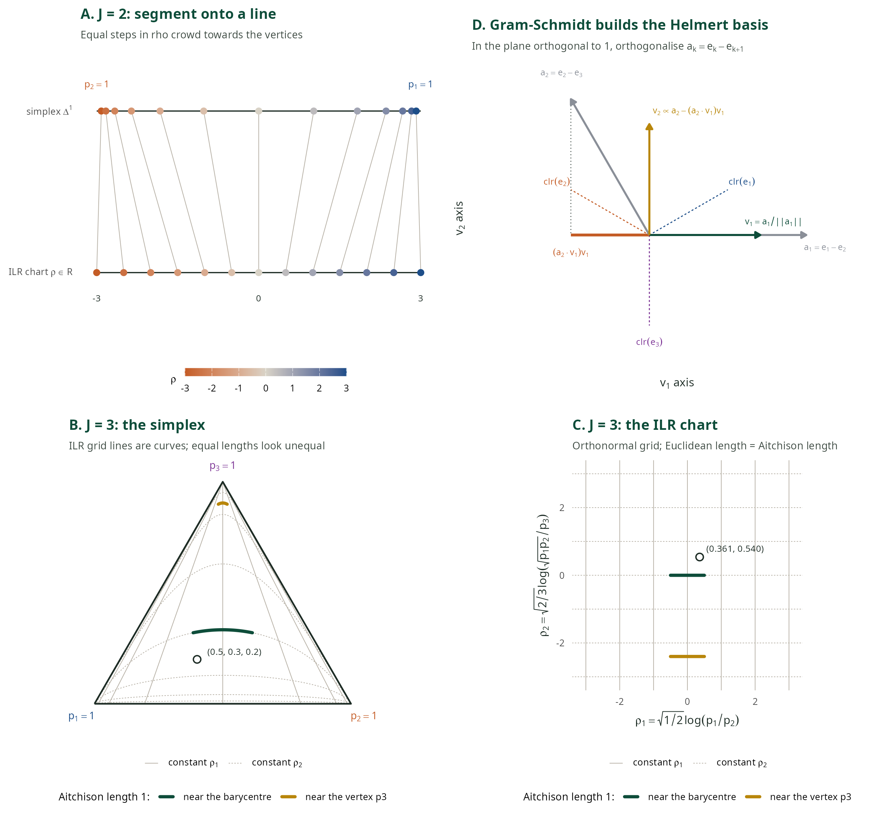
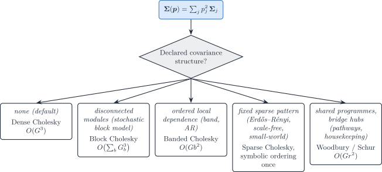

library(DeCovarT)
genes <- paste0("g", 1:3)
cts <- paste0("ct", 1:2)
mu <- matrix(
c(20, 40, 25, 35, 30, 22),
nrow = 3,
dimnames = list(genes, cts)
)
Sigma <- array(0, dim = c(3, 3, 2), dimnames = list(genes, genes, cts))
Sigma[, , 1] <- diag(c(1.0, 1.2, 0.8))
Sigma[, , 2] <- diag(c(1.5, 0.9, 1.1))
p_true <- c(0.65, 0.35)
y <- matrix(
drop(mu %*% p_true + rnorm(3, sd = 0.05)),
ncol = 1L,
dimnames = list(genes, "s1")
)
fit <- fit_decovart(
mu,
y,
Sigma = Sigma,
itmax = 80
)
coef(fit)
nobs(fit)
c(
n_genes = attr(nobs(fit), "n_genes"),
n_celltypes = attr(nobs(fit), "n_celltypes")
)
fitted(fit)
residuals(fit)
vcov(fit)Population-level DeCovarT: generative model, derivatives and optimisation on the simplex
2026-10-28
Source:vignettes/theory-population-generative-optimisation.qmd
DeCovarT maximises a Gaussian-convolution log-likelihood for cellular ratios \boldsymbol{p}\in\Delta^{J-1} when each reference column is a random population profile, such as a sorted population or the pseudobulk of one donor. This vignette covers the generative model and its optimisation. Sec. 1 states the model and its parametrisation. Sec. 3 derives the analytic first- and second-order derivatives with respect to the ambient proportions \boldsymbol{p}, and Sec. 4 maps them to the isometric log-ratio (ILR) chart that the Newton–Raphson solver uses. That section also compares the softmax, additive, centred and isometric log-ratio charts and explains why the solver uses ILR. Sec. 5 describes the second solver, L-BFGS-B on the closure of the non-negative orthant, which reaches the faces of the simplex exactly. Package entry points are gradient_loglik_unconstrained(), hessian_loglik_unconstrained(), gradient_loglik_constrained(), hessian_loglik_constrained() and fit_decovart().
Inference has its own vignette. The expected Fisher information, the ILR delta-method covariance behind vcov.decovart_fit(), and the Wald, profile, Firth and bootstrap intervals are in the population inference vignette. Single-cell references follow the same split: generative model and optimisation and inference.
Note 1: Notation
- Indices: gene g; cell types j,\ell\in\{1,\ldots,J\}; one bulk sample is fixed, so the sample index i is dropped; a,b index ILR coordinates.
- \boldsymbol{\mu}\in\mathbb{R}^{G\times J}: mean signature.
- \boldsymbol{\Sigma}_j\in\mathrm{SPD}(G): cell-type covariance; \boldsymbol{\Sigma}(\boldsymbol{p})=\sum_j p_j^{2}\boldsymbol{\Sigma}_j and \boldsymbol{\Omega}(\boldsymbol{p})=\boldsymbol{\Sigma}(\boldsymbol{p})^{-1}.
- \boldsymbol{p}: proportions on the open simplex (ambient score equations treat them as free coordinates in (0,1)^{J}).
- \boldsymbol{\rho}\in\mathbb{R}^{J-1}: unconstrained log-ratio coordinates (ILR / Helmert chart \mathbf{V}); \boldsymbol{p}=\operatorname{softmax}(\mathbf{V}\boldsymbol{\rho}). The manuscript DAG uses the same letter for the ALR chart; here \boldsymbol{\rho} denotes the ILR coordinates used by the solvers, and \boldsymbol{\rho}^{\mathrm{alr}} the ALR coordinates (Sec. 4.1).
The naive model and its parametrisation
The released model treats the reference moments \boldsymbol{\zeta}=(\boldsymbol{\mu},\{\boldsymbol{\Sigma}_j\}) as known and ignores every technical scale of single-cell data (the single-cell generative and optimisation vignette adds them). The simplex is handled by a chart, not by constraints:
\boldsymbol{p}=\boldsymbol{\psi}(\boldsymbol{\rho})=\operatorname{softmax}(\mathbf{V}\boldsymbol{\rho}), \qquad \boldsymbol{\rho}=\mathbf{V}^{\top}\log\boldsymbol{p}\in\mathbb{R}^{J-1}, \tag{1}
with \mathbf{V} a Helmert basis (Sec. 4.5). Two readings of Eq. 1 are useful later.
- An inverse link on the composition. \boldsymbol{\psi} maps a free linear predictor to the simplex, as the inverse multinomial-logit link does in a GLM for categorical responses. Here it acts on a parameter, not on the response: the bulk mean \boldsymbol{\mu}\boldsymbol{p} stays linear in \boldsymbol{p}.
-
The exponential version of
MEAD’s device.MEADestimates unconstrained weights \boldsymbol{\beta}_i=\gamma_i\boldsymbol{p}_i, then sets \hat{\boldsymbol{p}}_i=\hat{\boldsymbol{\beta}}_i^{\star}/\lVert\hat{\boldsymbol{\beta}}_i^{\star}\rVert_1, with either truncation \hat{\boldsymbol{\beta}}_i\vee 0 or, near zero, the softplus h_a(\beta)=a^{-1}\log(1+e^{a\beta}) (Xie et al. 2026). The softplus makes the delta method usable at the boundary, but for any finite a the estimator is not consistent; the authors take a=10 and report slightly lower coverage. Writing the weights as \beta_j=e^{z_j} instead and normalising gives the softmax: positivity is exact, no tuning constant is needed, and Eq. 1 is a reparametrisation, so the MLE in \boldsymbol{\rho} is the MLE in \boldsymbol{p}. The price is the same as for the softplus near zero: a proportion that is truly zero sits at \lVert\boldsymbol{\rho}\rVert=\infty (boundary inference).
Matrix calculus reminders
The score and Hessian of the convolution log-likelihood follow from a handful of matrix-derivative identities. The statements below mirror the matrix-calculus remarks in the manuscript Methods appendix.
Remark 1 (First-order matrix calculus). Let \boldsymbol{A}=\boldsymbol{A}(p) and \boldsymbol{B}=\boldsymbol{B}(p) be invertible matrix-valued functions of a scalar p, and let \boldsymbol{U}, \boldsymbol{V} be constant matrices of compatible size. Then
\begin{aligned} \frac{\partial\det(\boldsymbol{A})}{\partial p} &= \det(\boldsymbol{A})\, \mathrm{tr}\!\left( \boldsymbol{A}^{-1} \frac{\partial\boldsymbol{A}}{\partial p} \right), \\ \frac{\partial(\boldsymbol{U}\boldsymbol{A}\boldsymbol{V})}{\partial p} &= \boldsymbol{U} \frac{\partial\boldsymbol{A}}{\partial p} \boldsymbol{V}, \\ \frac{\partial\boldsymbol{A}^{-1}}{\partial p} &= - \boldsymbol{A}^{-1} \frac{\partial\boldsymbol{A}}{\partial p} \boldsymbol{A}^{-1}. \end{aligned} \tag{2}
The chain rule on \log\det yields
\frac{\partial\log\det(\boldsymbol{A})}{\partial p} = \mathrm{tr}\!\left( \boldsymbol{A}^{-1} \frac{\partial\boldsymbol{A}}{\partial p} \right), \qquad \frac{\partial\log\det(\boldsymbol{A}^{-1})}{\partial p} = - \mathrm{tr}\!\left( \boldsymbol{A}^{-1} \frac{\partial\boldsymbol{A}}{\partial p} \right). \tag{3}
For a residual quadratic form with symmetric precision \boldsymbol{\Omega} and mean map linear in p,
\frac{\partial}{\partial p} \bigl( (\boldsymbol{y}-\boldsymbol{x}p)^{\top} \boldsymbol{\Omega} (\boldsymbol{y}-\boldsymbol{x}p) \bigr) = -2\, \boldsymbol{x}^{\top} \boldsymbol{\Omega} (\boldsymbol{y}-\boldsymbol{x}p). \tag{4}
Remark 2 (Second-order matrix calculus). Differentiating the inverse once more gives
\frac{\partial^{2}\boldsymbol{A}^{-1}}{\partial p_{j}\partial p_{\ell}} = \boldsymbol{A}^{-1} \Biggl( \frac{\partial\boldsymbol{A}}{\partial p_{j}} \boldsymbol{A}^{-1} \frac{\partial\boldsymbol{A}}{\partial p_{\ell}} - \frac{\partial^{2}\boldsymbol{A}}{\partial p_{j}\partial p_{\ell}} + \frac{\partial\boldsymbol{A}}{\partial p_{\ell}} \boldsymbol{A}^{-1} \frac{\partial\boldsymbol{A}}{\partial p_{j}} \Biggr) \boldsymbol{A}^{-1}, \tag{5}
and the trace is linear, \partial\mathrm{tr}(\boldsymbol{A})/\partial p_{j} =\mathrm{tr}(\partial\boldsymbol{A}/\partial p_{j}). Combining Eq. 2 with that linearity yields
\frac{\partial^{2}\log\det(\boldsymbol{A}^{-1})}{\partial p_{j}\partial p_{\ell}} = - \mathrm{tr}\!\left[ \boldsymbol{A}^{-1} \frac{\partial^{2}\boldsymbol{A}}{\partial p_{j}\partial p_{\ell}} \right] + \mathrm{tr}\!\left[ \left( \boldsymbol{A}^{-1} \frac{\partial\boldsymbol{A}}{\partial p_{j}} \right) \left( \boldsymbol{A}^{-1} \frac{\partial\boldsymbol{A}}{\partial p_{\ell}} \right) \right]. \tag{6}
Tip 2: Inner products in the score
Several terms are \boldsymbol{\Omega}-inner products of signature columns, \boldsymbol{\mu}_{\cdot j}^{\top}\boldsymbol{\Omega}\boldsymbol{\mu}_{\cdot \ell}. The package evaluates them in one matrix product, \boldsymbol{\mu}^{\top}\boldsymbol{\Omega}\boldsymbol{\mu}, shared by the Hessian and the expected Fisher information.
Unconstrained score and Hessian
Conditional on the reference moments \boldsymbol{\zeta}=(\boldsymbol{\mu},\{\boldsymbol{\Sigma}_{j}\}), the bulk follows \boldsymbol{y}\mid\boldsymbol{\zeta},\boldsymbol{p} \sim\mathcal{N}_{G}\bigl(\boldsymbol{\mu}\boldsymbol{p}, \boldsymbol{\Sigma}(\boldsymbol{p})\bigr). Up to an additive constant independent of \boldsymbol{p},
\ell_{\boldsymbol{y}\mid\boldsymbol{\zeta}}(\boldsymbol{p}) = \tfrac{1}{2}\log\det\boldsymbol{\Omega}(\boldsymbol{p}) - \tfrac{1}{2} (\boldsymbol{y}-\boldsymbol{\mu}\boldsymbol{p})^{\top} \boldsymbol{\Omega}(\boldsymbol{p}) (\boldsymbol{y}-\boldsymbol{\mu}\boldsymbol{p}). \tag{7}
Important 3: The determinant term carries a factor \tfrac{1}{2}
Both terms of Eq. 7 are halved, because \log\det\boldsymbol{\Omega}=-\log\det\boldsymbol{\Sigma} enters the Gaussian log-density as -\tfrac{1}{2}\log\det\boldsymbol{\Sigma}(\boldsymbol{p}). DeCovarT releases before 2.3.0 implemented -\log\det\boldsymbol{\Sigma}(\boldsymbol{p}), which doubled the determinant contribution. The objective was then not the stated Gaussian model, and it disagreed with the expected Fisher information, which had always been the one implied by the correct density. With the factor restored,
loglik_multivariate()matchesmvtnorm::dmvnorm(..., log = TRUE)up to the constant \tfrac{G}{2}\log(2\pi), and \mathbb{E}[-\mathbf{H}]=I(\boldsymbol{p}) holds exactly (see observed versus expected information). Point estimates move only slightly, because the two terms trade off differently, but likelihood values, AIC, likelihood-ratio statistics, and any curvature-based standard error do change.
Warning 4: What “unconstrained” means here
Sec. 3 treats each p_{j} as an ambient coordinate in (0,1) and ignores \sum_{j}p_{j}=1. The resulting gradient and Hessian are the building blocks of the ILR chain rule in Sec. 4. They are not the coordinates used by Marquardt–Levenberg or Newton–Raphson in the package (those optimise in \boldsymbol{\rho}-space). The box-constrained L-BFGS-B path is the exception: it works directly in \boldsymbol{p} with [0,1]^{J} boxes and does not enforce the simplex exactly.
Applying Eq. 3 and Eq. 4 with \partial\boldsymbol{\Sigma}/\partial p_{j}=2p_{j}\boldsymbol{\Sigma}_{j} gives the ambient score.
Theorem 1 (Unconstrained gradient)
\begin{aligned} \frac{\partial\ell}{\partial p_{j}} &= \underbrace{-p_{j}\,\mathrm{tr}\bigl( \boldsymbol{\Omega}\boldsymbol{\Sigma}_{j} \bigr)}_{\text{purple}} + \underbrace{ (\boldsymbol{y}-\boldsymbol{\mu}\boldsymbol{p})^{\top} \boldsymbol{\Omega} \boldsymbol{\mu}_{\cdot j} }_{\text{blue}} \\ &\quad+ \underbrace{ p_{j}\, (\boldsymbol{y}-\boldsymbol{\mu}\boldsymbol{p})^{\top} \boldsymbol{\Omega} \boldsymbol{\Sigma}_{j} \boldsymbol{\Omega} (\boldsymbol{y}-\boldsymbol{\mu}\boldsymbol{p}) }_{\text{orange}}. \end{aligned} \tag{8}
Differentiating Eq. 8 once more yields the ambient Hessian \mathbf{H}\in\mathcal{M}_{J\times J}. Diagonal and off-diagonal blocks keep the same colour pairing.
Theorem 2 (Unconstrained Hessian)
For j\in\{1,\ldots,J\},
\begin{aligned} \mathbf{H}_{jj} &= \frac{\partial^{2}\ell}{\partial p_{j}^{2}} = \underbrace{ -\,\mathrm{tr}(\boldsymbol{\Omega}\boldsymbol{\Sigma}_{j}) + 2p_{j}^{2}\,\mathrm{tr}\bigl( (\boldsymbol{\Omega}\boldsymbol{\Sigma}_{j})^{2} \bigr) }_{\text{purple}} \\ &\quad \underbrace{ -2p_{j} (\boldsymbol{y}-\boldsymbol{\mu}\boldsymbol{p})^{\top} \boldsymbol{\Omega} \boldsymbol{\Sigma}_{j} \boldsymbol{\Omega} \boldsymbol{\mu}_{\cdot j} - \boldsymbol{\mu}_{\cdot j}^{\top} \boldsymbol{\Omega} \boldsymbol{\mu}_{\cdot j} }_{\text{blue}} \\ &\quad \underbrace{ -2p_{j} (\boldsymbol{y}-\boldsymbol{\mu}\boldsymbol{p})^{\top} \boldsymbol{\Omega} \boldsymbol{\Sigma}_{j} \boldsymbol{\Omega} \boldsymbol{\mu}_{\cdot j} - (\boldsymbol{y}-\boldsymbol{\mu}\boldsymbol{p})^{\top} \boldsymbol{\Omega} \bigl( 4p_{j}^{2}\boldsymbol{\Sigma}_{j}\boldsymbol{\Omega}\boldsymbol{\Sigma}_{j} - \boldsymbol{\Sigma}_{j} \bigr) \boldsymbol{\Omega} (\boldsymbol{y}-\boldsymbol{\mu}\boldsymbol{p}) }_{\text{orange}}, \end{aligned} \tag{9}
and for j\neq\ell,
\begin{aligned} \mathbf{H}_{j\ell} &= \frac{\partial^{2}\ell}{\partial p_{j}\partial p_{\ell}} = \underbrace{ 2p_{j}p_{\ell}\, \mathrm{tr}\bigl( \boldsymbol{\Omega}\boldsymbol{\Sigma}_{\ell} \boldsymbol{\Omega}\boldsymbol{\Sigma}_{j} \bigr) }_{\text{purple}} \\ &\quad \underbrace{ -2p_{j} (\boldsymbol{y}-\boldsymbol{\mu}\boldsymbol{p})^{\top} \boldsymbol{\Omega} \boldsymbol{\Sigma}_{j} \boldsymbol{\Omega} \boldsymbol{\mu}_{\cdot \ell} - \boldsymbol{\mu}_{\cdot j}^{\top} \boldsymbol{\Omega} \boldsymbol{\mu}_{\cdot \ell} }_{\text{blue}} \\ &\quad \underbrace{ -2p_{\ell} (\boldsymbol{y}-\boldsymbol{\mu}\boldsymbol{p})^{\top} \boldsymbol{\Omega} \boldsymbol{\Sigma}_{\ell} \boldsymbol{\Omega} \boldsymbol{\mu}_{\cdot j} - 4p_{j}p_{\ell} (\boldsymbol{y}-\boldsymbol{\mu}\boldsymbol{p})^{\top} \boldsymbol{\Omega} \boldsymbol{\Sigma}_{j} \boldsymbol{\Omega} \boldsymbol{\Sigma}_{\ell} \boldsymbol{\Omega} (\boldsymbol{y}-\boldsymbol{\mu}\boldsymbol{p}) }_{\text{orange}}. \end{aligned} \tag{10}
The stationary equation \nabla\ell(\boldsymbol{p})=\boldsymbol{0} has no closed root, so DeCovarT uses iterative solvers. Analytic gradients and Hessians are checked against Richardson extrapolation in numDeriv (Gilbert and Varadhan 2019).
Constrained optimisation on the simplex
The cellular ratios satisfy p_{j}\ge 0 and \sum_{j}p_{j}=1, the compositional or unit-simplex constraint. An optimiser can handle it in three ways: eliminate it with a reparametrisation, enforce it softly with penalties or barriers, or enforce it exactly with projections and Karush–Kuhn–Tucker (KKT) conditions. DeCovarT uses the first route: a C^{2} diffeomorphism from free Euclidean coordinates onto the open simplex, so every Newton step stays feasible by construction. Four such charts are common: the softmax, the additive log-ratio (ALR), the centred log-ratio (CLR) and the isometric log-ratio (ILR). This section defines the notation they share (Sec. 4.1), presents each chart (Sec. 4.2–Sec. 4.5), explains why DeCovarT uses ILR (Sec. 4.6) and compares the four side by side (Sec. 4.7). The derivatives of the ILR chart (Sec. 4.8, Sec. 4.9), their link to the Lagrangian (Sec. 4.10) and perspectives on Bayesian charts and exact zeros (Sec. 4.11) follow.
The compositional background is chapter 4 of Modelling and Analysis of Compositional Data (Pawlowsky-Glahn et al. 2015), cited below by page.
Notation for compositions and charts
| Symbol | Meaning |
|---|---|
| \Delta^{J-1}=\{\boldsymbol{p}\in\mathbb{R}^{J}:p_{j}\ge 0,\ \mathbf{1}_{J}^{\mathsf{T}}\boldsymbol{p}=1\} | closed unit simplex of J cell types; its interior \mathring{\Delta}^{J-1} has p_{j}>0 for all j |
| \mathbf{1}_{J}, \mathbf{I}_{J} | vector of ones, identity matrix |
| \mathbf{H}_{J}=\mathbf{I}_{J}-\tfrac{1}{J}\mathbf{1}_{J}\mathbf{1}_{J}^{\mathsf{T}} | centring matrix: orthogonal projector onto \mathbf{1}_{J}^{\perp}=\{\boldsymbol{w}:\mathbf{1}_{J}^{\mathsf{T}}\boldsymbol{w}=0\} |
| \mathcal{C}(\boldsymbol{x})=\boldsymbol{x}/(\mathbf{1}_{J}^{\mathsf{T}}\boldsymbol{x}) | closure of a positive vector \boldsymbol{x}\in(0,\infty)^{J} |
| \log\boldsymbol{p}, \exp\boldsymbol{z} | applied component by component |
| g(\boldsymbol{p})=\bigl(\prod_{j}p_{j}\bigr)^{1/J} | geometric mean |
| \operatorname{softmax}(\boldsymbol{z})=\mathcal{C}(\exp\boldsymbol{z}) | closure of exponentiated scores \boldsymbol{z}\in\mathbb{R}^{J} |
| \boldsymbol{\psi} | a chart: a smooth bijection from free coordinates onto \mathring{\Delta}^{J-1} |
| \boldsymbol{z}\in\mathbb{R}^{J}, \boldsymbol{\rho}^{\mathrm{alr}}\in\mathbb{R}^{J-1}, \boldsymbol{\xi}\in\mathbf{1}_{J}^{\perp}, \boldsymbol{\rho}\in\mathbb{R}^{J-1} | softmax scores, ALR coordinates (reference J unless a superscript names it), CLR and ILR coordinates |
| \mathbf{V}\in\mathbb{R}^{J\times(J-1)} | Helmert basis of the ILR chart (Sec. 4.5.1) |
| \mathbf{D}_{r}\in\mathbb{R}^{(J-1)\times J} | ALR contrast with reference r: rows \boldsymbol{e}_{j}^{\mathsf{T}}-\boldsymbol{e}_{r}^{\mathsf{T}}, j\neq r |
| \mathbf{S}(\boldsymbol{p})=\operatorname{diag}(\boldsymbol{p})-\boldsymbol{p}\boldsymbol{p}^{\mathsf{T}} | Jacobian of the softmax at \boldsymbol{p} |
The closure operator. \mathcal{C} rescales any positive vector to unit sum. It discards the total and keeps the relative sizes: \mathcal{C}(c\boldsymbol{x})=\mathcal{C}(\boldsymbol{x}) for every c>0. A composition is therefore an equivalence class of proportional positive vectors, and \mathcal{C} picks its representative on the simplex (Pawlowsky-Glahn et al. 2015, 33–35). Two consequences matter here.
- Only scale-free functions of \boldsymbol{p} are meaningful, and the log-ratios \log(p_{j}/p_{\ell}) are the simplest. A constant added to \log\boldsymbol{p} does not change the composition, so every log-ratio chart must cancel the direction \mathbf{1}_{J}.
- Closure creates dependence. Library-size normalisation of counts is a closure, and it induces negative covariances between parts that need not exist in the absolute abundances.
Closure also gives the simplex a Euclidean vector-space structure, the Aitchison geometry: perturbation \boldsymbol{x}\oplus\boldsymbol{y}=\mathcal{C}(\boldsymbol{x}\circ\boldsymbol{y}) plays the role of addition, powering \alpha\odot\boldsymbol{x}=\mathcal{C}(\boldsymbol{x}^{\alpha}) the role of scalar multiplication, and the inner product is \langle\boldsymbol{x},\boldsymbol{y}\rangle_{a} =\operatorname{clr}(\boldsymbol{x})^{\mathsf{T}}\operatorname{clr}(\boldsymbol{y}) (Pawlowsky-Glahn et al. 2015, Property 4.2, p. 35). The log-ratio charts below are linear maps for this structure; they differ in whether they also preserve its inner product.
Softmax and log-sum-exp
The softmax of scores \boldsymbol{z}\in\mathbb{R}^{J} is evaluated through the log-sum-exp (LSE) to avoid overflow,
s_{j} = \frac{e^{z_{j}}}{\sum_{\ell}e^{z_{\ell}}} = e^{z_{j}-\operatorname{LSE}(\boldsymbol{z})}, \qquad \operatorname{LSE}(\boldsymbol{z}) = z_{\max}+\log\sum_{\ell}e^{z_{\ell}-z_{\max}}, \quad z_{\max}=\max_{\ell}z_{\ell}. \tag{11}
Its Jacobian is \mathbf{J}_{\mathrm{softmax}}=\mathbf{S}(\boldsymbol{s}) =\operatorname{diag}(\boldsymbol{s})-\boldsymbol{s}\boldsymbol{s}^{\mathsf{T}}, which is also \nabla^{2}\operatorname{LSE}(\boldsymbol{z}). The second derivative is the third-order tensor
H_{j\ell m} = s_{j}\bigl[ (\delta_{j\ell}-s_{\ell})(\delta_{jm}-s_{m}) - s_{\ell}(\delta_{\ell m}-s_{m}) \bigr]. \tag{12}
The softmax with J free scores is over-parametrised: \operatorname{softmax}(\boldsymbol{z}+c\mathbf{1}_{J}) =\operatorname{softmax}(\boldsymbol{z}), because closure removes the common factor e^{c}. Accordingly \mathbf{S}(\boldsymbol{s})\mathbf{1}_{J}=\boldsymbol{0}, the Jacobian has rank J-1, and the Hessian of \ell(\operatorname{softmax}(\boldsymbol{z})) has a zero eigenvalue along \mathbf{1}_{J}: a Newton system in \boldsymbol{z} is singular. The three log-ratio charts are three ways to remove this redundant direction. Each writes \boldsymbol{p}=\operatorname{softmax}(\mathbf{B}\boldsymbol{\theta}) with \boldsymbol{\theta}\in\mathbb{R}^{J-1} and a matrix \mathbf{B}\in\mathbb{R}^{J\times(J-1)} whose columns, together with \mathbf{1}_{J}, span \mathbb{R}^{J}. ALR pins one score to zero, CLR constrains the scores to sum to zero, and ILR spans \mathbf{1}_{J}^{\perp} with an orthonormal basis.
Additive log-ratio chart
Pin a reference cell type r, by default the last one (r=J). The ALR coordinates and their inverse, the additive logistic transform, are (Aitchison 1982)
\rho^{\mathrm{alr}}_{j} = \log\!\left(\frac{p_{j}}{p_{J}}\right), \qquad p_{j} = \frac{e^{\rho^{\mathrm{alr}}_{j}}}{1+\sum_{\ell<J}e^{\rho^{\mathrm{alr}}_{\ell}}}\ (j<J), \qquad p_{J} = \frac{1}{1+\sum_{\ell<J}e^{\rho^{\mathrm{alr}}_{\ell}}}. \tag{13}
Equivalently \boldsymbol{p}=\operatorname{softmax}(\rho^{\mathrm{alr}}_{1},\ldots,\rho^{\mathrm{alr}}_{J-1},0) and \boldsymbol{\rho}^{\mathrm{alr}}=\mathbf{D}_{J}\log\boldsymbol{p}. The “1” in the denominator is the reference part; the word additive refers to the sum of exponentials in that denominator, not to the Aitchison perturbation (Pawlowsky-Glahn et al. 2015, 47). The package solvers use the isometric chart below, not this additive one. The Jacobian of Eq. 13 is the softmax Jacobian with the reference column dropped, \partial p_{j}/\partial\rho^{\mathrm{alr}}_{a}=p_{j}(\delta_{ja}-p_{a}) for a=1,\ldots,J-1.
Example 1 (ALR in both directions for \boldsymbol{p}=(0.5,0.3,0.2))
Colours track each cell type: \textcolor{#1d4e89}{p_{1}}, \textcolor{#c45c26}{p_{2}} and the reference \textcolor{#7b3294}{p_{3}}.
Forward. Each coordinate compares one cell type with the reference, so the reference enters both coordinates:
\left\{ \begin{aligned} \rho^{\mathrm{alr}}_{1} &=\log\frac{\textcolor{#1d4e89}{p_{1}}}{\textcolor{#7b3294}{p_{3}}} =\log\frac{\textcolor{#1d4e89}{0.5}}{\textcolor{#7b3294}{0.2}} =\log 2.5\approx 0.916\\ \rho^{\mathrm{alr}}_{2} &=\log\frac{\textcolor{#c45c26}{p_{2}}}{\textcolor{#7b3294}{p_{3}}} =\log\frac{\textcolor{#c45c26}{0.3}}{\textcolor{#7b3294}{0.2}} =\log 1.5\approx 0.405 \end{aligned} \right.
Backward. Exponentiate each coordinate, give the reference the weight e^{0}=1, then close; the common denominator is 1+e^{\rho^{\mathrm{alr}}_{1}}+e^{\rho^{\mathrm{alr}}_{2}}=1+2.5+1.5=5:
\left\{ \begin{aligned} \textcolor{#1d4e89}{p_{1}} &=\frac{e^{\rho^{\mathrm{alr}}_{1}}}{1+e^{\rho^{\mathrm{alr}}_{1}}+e^{\rho^{\mathrm{alr}}_{2}}} =\frac{\textcolor{#1d4e89}{2.5}}{5} =\textcolor{#1d4e89}{0.5}\\ \textcolor{#c45c26}{p_{2}} &=\frac{e^{\rho^{\mathrm{alr}}_{2}}}{1+e^{\rho^{\mathrm{alr}}_{1}}+e^{\rho^{\mathrm{alr}}_{2}}} =\frac{\textcolor{#c45c26}{1.5}}{5} =\textcolor{#c45c26}{0.3}\\ \textcolor{#7b3294}{p_{3}} &=\frac{1}{1+e^{\rho^{\mathrm{alr}}_{1}}+e^{\rho^{\mathrm{alr}}_{2}}} =\frac{\textcolor{#7b3294}{1}}{5} =\textcolor{#7b3294}{0.2} \end{aligned} \right.
Changing the reference. With \textcolor{#1d4e89}{p_{1}} as reference (superscript 1), \rho^{\mathrm{alr},1}_{1}=\log(\textcolor{#c45c26}{p_{2}}/\textcolor{#1d4e89}{p_{1}})\approx-0.511 and \rho^{\mathrm{alr},1}_{2}=\log(\textcolor{#7b3294}{p_{3}}/\textcolor{#1d4e89}{p_{1}})\approx-0.916, that is \rho^{\mathrm{alr},1}_{1}=\rho^{\mathrm{alr}}_{2}-\rho^{\mathrm{alr}}_{1} and \rho^{\mathrm{alr},1}_{2}=-\rho^{\mathrm{alr}}_{1}. The two charts are related by the matrix \bigl(\begin{smallmatrix}-1&1\\-1&0\end{smallmatrix}\bigr), which is invertible but not orthogonal: its singular values are 1.618 and 0.618, so it stretches some directions 2.6 times more than others.
What the reference changes, and what it does not. All ALR charts describe the same family of compositions; only the coordinates differ. Sec. 4.6 shows that the estimate \hat{\boldsymbol{p}}, the maximised log-likelihood and the delta-method covariance of \hat{\boldsymbol{p}} do not depend on the reference. The numerical geometry does: ALR coordinates refer to an oblique, non-orthogonal basis of the simplex (Pawlowsky-Glahn et al. 2015, 47), so Euclidean lengths, angles and Hessian condition numbers in \boldsymbol{\rho}^{\mathrm{alr}} change with the reference.
Centred log-ratio coefficients
The CLR transform divides each part by the geometric mean (Aitchison 1982):
\boldsymbol{\xi} = \operatorname{clr}(\boldsymbol{p}) = \log\frac{\boldsymbol{p}}{g(\boldsymbol{p})} = \mathbf{H}_{J}\log\boldsymbol{p}, \qquad \boldsymbol{p} = \mathcal{C}(\exp\boldsymbol{\xi}) = \operatorname{softmax}(\boldsymbol{\xi}). \tag{14}
CLR treats every cell type symmetrically and preserves the Aitchison geometry: distances and inner products between compositions equal Euclidean ones between their CLR vectors (Pawlowsky-Glahn et al. 2015, Property 4.2, p. 35). Pairwise log-ratios are differences, \log(p_{j}/p_{\ell})=\xi_{j}-\xi_{\ell}. The price is a constraint on the coefficients: \mathbf{1}_{J}^{\mathsf{T}}\boldsymbol{\xi}=0. CLR gives J coefficients for J-1 degrees of freedom, so they are not coordinates in a basis, a random CLR vector has a singular covariance matrix, and the coefficients change when a subcomposition is analysed (Pawlowsky-Glahn et al. 2015, 34–35). Optimising over a free \boldsymbol{\xi}\in\mathbb{R}^{J} is the over-parametrised softmax of Sec. 4.2 again.
CLR is nevertheless the hub between the other charts. Since \mathbf{D}_{r}\mathbf{1}_{J}=\boldsymbol{0} and \mathbf{V}^{\mathsf{T}}\mathbf{1}_{J}=\boldsymbol{0}, both ALR and ILR are linear images of CLR: \boldsymbol{\rho}^{\mathrm{alr}}=\mathbf{D}_{r}\boldsymbol{\xi} and \boldsymbol{\rho}=\mathbf{V}^{\mathsf{T}}\boldsymbol{\xi}.
Isometric log-ratio chart
ILR expresses \boldsymbol{\xi} in an orthonormal basis of the hyperplane \mathbf{1}_{J}^{\perp} (Egozcue et al. 2003). Choose \mathbf{V}\in\mathbb{R}^{J\times(J-1)} with
\mathbf{V}^{\mathsf{T}}\mathbf{V}=\mathbf{I}_{J-1}, \qquad \mathbf{V}^{\mathsf{T}}\mathbf{1}_{J}=\mathbf{0}, \qquad \mathbf{V}\mathbf{V}^{\mathsf{T}}=\mathbf{H}_{J}. \tag{15}
ILR coordinates and their inverse are (Pawlowsky-Glahn and Buccianti 2011)
\boldsymbol{\rho} = \mathbf{V}^{\mathsf{T}}\log\boldsymbol{p} = \mathbf{V}^{\mathsf{T}}\operatorname{clr}(\boldsymbol{p}), \qquad \boldsymbol{p} = \operatorname{softmax}(\mathbf{V}\boldsymbol{\rho}) = \mathcal{C}\bigl\{\exp(\mathbf{V}\boldsymbol{\rho})\bigr\}. \tag{16}
In the book’s notation the contrast matrix is \boldsymbol{\Psi}=\mathbf{V}^{\mathsf{T}}, and Eq. 15 is its Eq. (4.5); Eq. 16 is Eqs. (4.7)–(4.8) (Pawlowsky-Glahn et al. 2015, 36–37). ILR keeps the strengths of both previous charts: like ALR it gives J-1 unconstrained coordinates, and like CLR it preserves the Aitchison geometry, now with d_{a}(\boldsymbol{x},\boldsymbol{y})
=\lVert\operatorname{ilr}(\boldsymbol{x})-\operatorname{ilr}(\boldsymbol{y})\rVert (Property 4.5, p. 37). No cell type is a reference. Package helpers helmert_basis(), isometric_logistic() and isometric_log_ratio() implement Eq. 15–Eq. 16 with a log-sum-exp softmax, matching the compositions::ilr() / ilrInv() convention on a Helmert basis (van den Boogaart et al. 2025).
The Helmert basis: definition, role and use
Definition. The ILR chart needs one orthonormal basis of \mathbf{1}_{J}^{\perp}; there are infinitely many. The Helmert basis is the one with a closed form. Column k=1,\ldots,J-1 of helmert_basis() is
\boldsymbol{v}_{k} = \frac{1}{\sqrt{k(k+1)}} \bigl(\underbrace{1,\ldots,1}_{k},\,-k,\,\underbrace{0,\ldots,0}_{J-k-1}\bigr)^{\mathsf{T}}. \tag{17}
Each column sums to zero and has unit norm, and two columns are orthogonal because the later one is constant on the support of the earlier one. The basis is the Gram–Schmidt orthonormalisation of the generating system of the simplex (Egozcue et al. 2003), and its contrast matrix is a Helmert matrix without the constant row (Pawlowsky-Glahn et al. 2015, Example 4.6, p. 40). The book lists the same basis in reverse order, with the first coordinate contrasting the first J-1 parts with the last one.
Role: every coordinate is a balance. Inserting Eq. 17 into Eq. 16 gives
\rho_{k} = \boldsymbol{v}_{k}^{\mathsf{T}}\log\boldsymbol{p} = \sqrt{\frac{k}{k+1}}\, \log\frac{g(p_{1},\ldots,p_{k})}{p_{k+1}}, \tag{18}
the normalised log-ratio between the geometric mean of the first k cell types and type k+1. This is the balance of a sequential binary partition: level k splits \{1,\ldots,k+1\} into \{1,\ldots,k\} (sign +) and \{k+1\} (sign -) (Pawlowsky-Glahn et al. 2015, Eq. (4.9), pp. 38–39). For J=4 the sign matrix is
| Level | p_{1} | p_{2} | p_{3} | p_{4} |
|---|---|---|---|---|
| \rho_{1} | + | - | 0 | 0 |
| \rho_{2} | + | + | - | 0 |
| \rho_{3} | + | + | + | - |
The factor \sqrt{k/(k+1)} makes balances comparable across levels. Balances are geometrically orthogonal, so each carries information the others do not; geometric orthogonality does not imply that their estimates are uncorrelated (Pawlowsky-Glahn et al. 2015, 41). The Helmert basis thus does three jobs at once:
- it cancels the closure direction, because every column sums to zero: adding a constant to \log\boldsymbol{p} leaves \boldsymbol{\rho} unchanged;
- it removes the redundant softmax direction while keeping Euclidean geometry, because the columns are orthonormal;
- it is explicit and sparse, so \mathbf{V}\boldsymbol{\rho} costs O(J) operations per column and needs no QR or Gram–Schmidt step at run time.
Use in practice. DeCovarT builds \mathbf{V} once from J and proceeds as follows.
- Map a starting composition to coordinates with
isometric_log_ratio(p), which computes \mathbf{V}^{\mathsf{T}}\log\boldsymbol{p}. - Iterate on \boldsymbol{\rho}\in\mathbb{R}^{J-1} with the score and Hessian of Theorem 3; no step can leave the simplex.
- Map back with
isometric_logistic(rho), a log-sum-exp softmax of \mathbf{V}\boldsymbol{\rho}. - Push the covariance of \hat{\boldsymbol{\rho}} to \hat{\boldsymbol{p}} with the Jacobian \mathbf{S}(\boldsymbol{p})\mathbf{V} (ILR delta method).
The order of the cell types fixes which balances are reported, not the estimate. Both helpers accept another basis through their V argument: for instance, a partition that first contrasts immune with stromal types gives coordinates with a biological reading. Any such basis is \mathbf{V}Q for an orthogonal Q (Proposition 2).

vignettes/scripts/generate_ilr_isometry_figure.R.
Figure 1 summarises the construction. Gram–Schmidt applied to the successive differences \boldsymbol{e}_{k}-\boldsymbol{e}_{k+1}, which span \mathbf{1}_{J}^{\perp}, returns exactly the columns of Eq. 17 for every J (panel D); the resulting chart is isometric, so equal Aitchison lengths become equal Euclidean lengths (panels B–C).
Example 2 (ILR in both directions for \boldsymbol{p}=(0.5,0.3,0.2))
For J=3 the Helmert columns are \boldsymbol{v}_{1}=(1,-1,0)^{\mathsf{T}}/\sqrt{2} and \boldsymbol{v}_{2}=(1,1,-2)^{\mathsf{T}}/\sqrt{6}. The entries of \mathbf{V} are the weights each coordinate gives to each \log\textcolor{#1d4e89}{p_{1}}, \log\textcolor{#c45c26}{p_{2}} and \log\textcolor{#7b3294}{p_{3}}; in each coordinate the weights sum to zero.
Forward, \boldsymbol{\rho}=\mathbf{V}^{\mathsf{T}}\log\boldsymbol{p}:
\left\{ \begin{aligned} \rho_{1} &=\tfrac{1}{\sqrt{2}}\log\textcolor{#1d4e89}{p_{1}} -\tfrac{1}{\sqrt{2}}\log\textcolor{#c45c26}{p_{2}} +0\cdot\log\textcolor{#7b3294}{p_{3}} =\tfrac{1}{\sqrt{2}}\log\frac{\textcolor{#1d4e89}{0.5}}{\textcolor{#c45c26}{0.3}} \approx 0.361\\ \rho_{2} &=\tfrac{1}{\sqrt{6}}\log\textcolor{#1d4e89}{p_{1}} +\tfrac{1}{\sqrt{6}}\log\textcolor{#c45c26}{p_{2}} -\tfrac{2}{\sqrt{6}}\log\textcolor{#7b3294}{p_{3}} =\sqrt{\tfrac{2}{3}}\log\frac{\sqrt{\textcolor{#1d4e89}{0.5}\times\textcolor{#c45c26}{0.3}}}{\textcolor{#7b3294}{0.2}} \approx 0.540 \end{aligned} \right.
\rho_{1} balances type 1 against type 2; \rho_{2} balances their geometric mean against type 3.
Backward, in two steps. First \boldsymbol{\xi}=\mathbf{V}\boldsymbol{\rho}, read row by row, so row j of \mathbf{V} rebuilds the CLR coefficient of cell type j:
\left\{ \begin{aligned} \textcolor{#1d4e89}{\xi_{1}} &=\tfrac{1}{\sqrt{2}}\rho_{1}+\tfrac{1}{\sqrt{6}}\rho_{2} \approx 0.255+0.220=0.476\\ \textcolor{#c45c26}{\xi_{2}} &=-\tfrac{1}{\sqrt{2}}\rho_{1}+\tfrac{1}{\sqrt{6}}\rho_{2} \approx -0.255+0.220=-0.035\\ \textcolor{#7b3294}{\xi_{3}} &=0\cdot\rho_{1}-\tfrac{2}{\sqrt{6}}\rho_{2} \approx -0.441 \end{aligned} \right.
Then exponentiate and close; the common denominator is e^{\xi_{1}}+e^{\xi_{2}}+e^{\xi_{3}}\approx 1.609+0.966+0.644=3.218:
\left\{ \begin{aligned} \textcolor{#1d4e89}{p_{1}} &=\frac{e^{\xi_{1}}}{e^{\xi_{1}}+e^{\xi_{2}}+e^{\xi_{3}}} \approx\frac{\textcolor{#1d4e89}{1.609}}{3.218} =\textcolor{#1d4e89}{0.5}\\ \textcolor{#c45c26}{p_{2}} &=\frac{e^{\xi_{2}}}{e^{\xi_{1}}+e^{\xi_{2}}+e^{\xi_{3}}} \approx\frac{\textcolor{#c45c26}{0.966}}{3.218} =\textcolor{#c45c26}{0.3}\\ \textcolor{#7b3294}{p_{3}} &=\frac{e^{\xi_{3}}}{e^{\xi_{1}}+e^{\xi_{2}}+e^{\xi_{3}}} \approx\frac{\textcolor{#7b3294}{0.644}}{3.218} =\textcolor{#7b3294}{0.2} \end{aligned} \right.
The intermediate \boldsymbol{\xi} is exactly \operatorname{clr}(\boldsymbol{p}).
Link with ALR. Since \rho^{\mathrm{alr}}_{j}=\xi_{j}-\xi_{3},
\left\{ \begin{aligned} \rho^{\mathrm{alr}}_{1}&=\tfrac{1}{\sqrt{2}}\rho_{1}+\tfrac{3}{\sqrt{6}}\rho_{2}\approx 0.255+0.661=0.916\\ \rho^{\mathrm{alr}}_{2}&=-\tfrac{1}{\sqrt{2}}\rho_{1}+\tfrac{3}{\sqrt{6}}\rho_{2}\approx -0.255+0.661=0.405 \end{aligned} \right.
which recovers Example 1. The matrix \mathbf{A}_{3}=\mathbf{D}_{3}\mathbf{V} of this map has orthogonal columns of lengths 1 and \sqrt{3}: ALR keeps \rho_{1} at unit scale and stretches \rho_{2}, the balance of the reference \textcolor{#7b3294}{p_{3}} against the rest, by \sqrt{3}.
Proposition 1 (ILR is a C^{2} diffeomorphism)
\boldsymbol{\psi}:\mathbb{R}^{J-1}\to\mathring{\Delta}^{J-1}, \boldsymbol{\rho}\mapsto\operatorname{softmax}(\mathbf{V}\boldsymbol{\rho}), is bijective and infinitely differentiable, with inverse \mathbf{V}^{\mathsf{T}}\log\boldsymbol{p}. Every critical point in \boldsymbol{\rho}-space maps to a unique composition in the open simplex, and conversely.
Why DeCovarT uses the ILR chart
The question is which chart to optimise in, given that all of them describe the same model. Two kinds of invariance answer it: statistical invariance, which every chart has, and numerical invariance, which only ILR has under a change of convention.
Statistical invariance holds for every chart. Let \boldsymbol{\theta}'=\mathbf{A}\boldsymbol{\theta} be any invertible linear change of coordinates, for instance between ILR and ALR (\boldsymbol{\rho}^{\mathrm{alr}}=\mathbf{A}_{r}\boldsymbol{\rho} with \mathbf{A}_{r}=\mathbf{D}_{r}\mathbf{V}) or between two ALR references. The likelihood is a function of \boldsymbol{p} alone, so the maximiser is equivariant and \hat{\boldsymbol{p}} and \ell(\hat{\boldsymbol{p}}) are the same in every chart. The delta method is invariant too: the Jacobian becomes \mathbf{J}_{\boldsymbol{\psi}}\mathbf{A}^{-1} and the information \mathbf{A}^{-\mathsf{T}}\mathcal{I}\mathbf{A}^{-1}, so
\bigl(\mathbf{J}_{\boldsymbol{\psi}}\mathbf{A}^{-1}\bigr) \bigl(\mathbf{A}^{-\mathsf{T}}\mathcal{I}\mathbf{A}^{-1}\bigr)^{-1} \bigl(\mathbf{J}_{\boldsymbol{\psi}}\mathbf{A}^{-1}\bigr)^{\mathsf{T}} = \mathbf{J}_{\boldsymbol{\psi}}\mathcal{I}^{-1}\mathbf{J}_{\boldsymbol{\psi}}^{\mathsf{T}}. \tag{19}
In this sense ALR is reference-invariant: whichever cell type is the denominator, a correct implementation returns the same \hat{\boldsymbol{p}} and the same Wald covariance for \hat{\boldsymbol{p}}. A material change in \hat{\boldsymbol{p}} when the reference is permuted signals a numerical or convergence problem, not a statistical dependence on the reference. Pure Newton steps share this invariance, because the Newton step is invariant under affine changes of coordinates (Boyd et al. 2004, sec. 9.5).
Numerical invariance differs. What changes with the chart is the Euclidean geometry the solver sees: gradient norms, damping, stopping rules and the condition number of the Hessian, which controls the floating-point accuracy of every linear solve and of \mathcal{I}^{-1}.
Proposition 2 (Conditioning under a change of chart)
ILR. Any two orthonormal bases of \mathbf{1}_{J}^{\perp} satisfy \mathbf{V}^{\star}=\mathbf{V}Q with Q^{\mathsf{T}}Q=\mathbf{I}_{J-1}. Then \boldsymbol{\rho}^{\star}=Q^{\mathsf{T}}\boldsymbol{\rho}, \nabla_{\boldsymbol{\rho}^{\star}}\ell=Q^{\mathsf{T}}\nabla_{\boldsymbol{\rho}}\ell and \mathbf{H}_{\boldsymbol{\rho}^{\star}}=Q^{\mathsf{T}}\mathbf{H}_{\boldsymbol{\rho}}Q. Gradient norms, Hessian eigenvalues and condition numbers are identical in every orthonormal basis.
ALR. For every reference r, \mathbf{A}_{r}=\mathbf{D}_{r}\mathbf{V} has J-2 singular values equal to 1 and one equal to \sqrt{J}, so \kappa(\mathbf{A}_{r})=\sqrt{J}. The stretched direction is \mathbf{V}^{\mathsf{T}}\boldsymbol{e}_{r}, the log-abundance of the reference against all other types. Since \mathbf{H}_{\boldsymbol{\rho}^{\mathrm{alr}}}=\mathbf{A}_{r}^{-\mathsf{T}}\mathbf{H}_{\boldsymbol{\rho}}\mathbf{A}_{r}^{-1},
\frac{\kappa(\mathbf{H}_{\boldsymbol{\rho}})}{J} \le \kappa(\mathbf{H}_{\boldsymbol{\rho}^{\mathrm{alr}}}) \le J\,\kappa(\mathbf{H}_{\boldsymbol{\rho}}), \tag{20}
and the curvature along the reference’s own direction is divided by J.
Proof sketch. (i) is a similarity by an orthogonal matrix. For (ii), the rows of \mathbf{D}_{r} are \boldsymbol{e}_{j}-\boldsymbol{e}_{r}, so \mathbf{D}_{r}\mathbf{D}_{r}^{\mathsf{T}}=\mathbf{I}_{J-1}+\mathbf{1}_{J-1}\mathbf{1}_{J-1}^{\mathsf{T}}, with eigenvalues 1 (multiplicity J-2) and J. Because \mathbf{D}_{r}\mathbf{1}_{J}=\boldsymbol{0} and \mathbf{V} is an orthonormal basis of \mathbf{1}_{J}^{\perp}, \mathbf{A}_{r} has the same singular values as \mathbf{D}_{r}. The right singular vector for \sqrt{J} is proportional to \mathbf{V}^{\mathsf{T}}\mathbf{D}_{r}^{\mathsf{T}}\mathbf{1}_{J-1} =\mathbf{V}^{\mathsf{T}}(\mathbf{1}_{J}-J\boldsymbol{e}_{r}) =-J\,\mathbf{V}^{\mathsf{T}}\boldsymbol{e}_{r}. The bounds follow from \kappa(\mathbf{A}^{-\mathsf{T}}\mathbf{H}\mathbf{A}^{-1}) \le\kappa(\mathbf{A})^{2}\kappa(\mathbf{H}) applied in both directions. \square
The constant \kappa(\mathbf{A}_{r})=\sqrt{J} does not depend on r, but the direction it distorts does, so the condition number of the ALR Hessian depends on the reference. Even a perfectly conditioned problem, \mathbf{H}_{\boldsymbol{\rho}}=-\mathbf{I}, has \kappa(\mathbf{H}_{\boldsymbol{\rho}^{\mathrm{alr}}})=J in ALR coordinates. For an illustrative random negative-definite Hessian with J=6 (not a DeCovarT fit), \kappa=171 in every orthonormal basis, but between 164 and 420 across the six ALR references. A rare cell type, or one whose signature is nearly collinear with others, already has weak curvature along its own direction; choosing it as the ALR reference divides that curvature by J and makes the problem harder.
These differences affect the solver, not the target:
| Solver ingredient | ILR basis change (Q orthogonal) | ALR reference change (\mathbf{A} oblique) |
|---|---|---|
| Maximiser \hat{\boldsymbol{p}}, \ell(\hat{\boldsymbol{p}}), delta-method \operatorname{Var}(\hat{\boldsymbol{p}}) | invariant | invariant |
| Pure Newton step | invariant | invariant |
| Gradient norm, steepest-ascent and BFGS steps from an identity start | invariant | changed |
| Spherical trust region, isotropic damping \mathbf{H}-\mu\mathbf{I} | invariant | changed |
| Hessian condition number, accuracy of \mathcal{I}^{-1} | invariant | changed by a factor up to J |
The default solver is Newton–Raphson on \boldsymbol{\rho} (deconvolute_ratios_Newton_Raphson()), a second-order ascent that uses the analytic ILR score and Hessian of Theorem 3. Its pure Newton direction is the same in every chart; its safeguards, a spherical trust region and Euclidean step-length tolerances in stats::nlminb(), are unchanged by a rotation of the ILR basis but not by a change of ALR reference.
Note 5: Decision: DeCovarT optimises in ILR coordinates
ILR is the only chart of the four that is minimal (J-1 free coordinates), free of a privileged cell type and isometric for the Aitchison geometry. A change of its convention, the order of cell types or a different balance basis, is an orthogonal rotation, which leaves gradient norms and Hessian condition numbers unchanged. A change of ALR reference is an oblique map whose effect on conditioning depends on the reference. The solvers,
vcov.decovart_fit()and the boundary diagnostics therefore work in ILR coordinates. ALR is kept for comparison with multinomial-logit models, which use a reference category.
Side-by-side comparison of the four charts
| Property | Softmax | ALR | CLR | ILR |
|---|---|---|---|---|
| Coordinates | \boldsymbol{z}\in\mathbb{R}^{J} | \boldsymbol{\rho}^{\mathrm{alr}}=\mathbf{D}_{r}\log\boldsymbol{p}\in\mathbb{R}^{J-1} | \boldsymbol{\xi}=\mathbf{H}_{J}\log\boldsymbol{p}, with \mathbf{1}^{\mathsf{T}}\boldsymbol{\xi}=0 | \boldsymbol{\rho}=\mathbf{V}^{\mathsf{T}}\log\boldsymbol{p}\in\mathbb{R}^{J-1} |
| Inverse map | \operatorname{softmax}(\boldsymbol{z}) | \operatorname{softmax}(\boldsymbol{\rho}^{\mathrm{alr}},0) | \operatorname{softmax}(\boldsymbol{\xi}) | \operatorname{softmax}(\mathbf{V}\boldsymbol{\rho}) |
| Feasible after inverse map | yes | yes | yes | yes |
| Free and minimal (J-1 coordinates) | no: one redundant direction | yes | no: J coordinates on a hyperplane | yes |
| Jacobian of the inverse map | rank J-1 out of J | full rank | full rank on \mathbf{1}^{\perp} only | full rank |
| Privileged cell type | none | the reference r | none | none (order fixes the balances) |
| Isometry with Aitchison geometry | no | no (oblique basis) | yes | yes |
| Change of convention | not applicable | oblique, \kappa(\mathbf{A}_{r})=\sqrt{J} | not applicable | orthogonal rotation |
| Hessian conditioning across conventions | singular | depends on the reference | singular | invariant |
| Exact zeros at finite coordinates | no | no | no | no |
| Reading of a coordinate | none (shift-invariant) | log-ratio to the reference | log-ratio to the geometric mean | balance between groups |
| Typical use | neural networks, mixture weights | reference-category regression | exploration, visualisation | likelihood inference, optimisation |
All four charts guarantee feasibility, and none reaches a face of the simplex at finite coordinates. For likelihood inference ILR is usually the best suited: it is the only chart that is at once minimal, symmetric in the cell types and isometric, which is why Egozcue et al. introduced it to avoid the drawbacks of both ALR and CLR (Egozcue et al. 2003; Pawlowsky-Glahn et al. 2015, 33). Its cost is interpretation: a balance is less direct than a ratio to one reference, and the Helmert balances depend on the order of cell types unless a partition with a biological meaning is chosen.
Efficient derivatives of \boldsymbol{\psi}
Write \mathbf{S}(\boldsymbol{p})=\operatorname{diag}(\boldsymbol{p}) -\boldsymbol{p}\boldsymbol{p}^{\mathsf{T}}. The Jacobian is
\mathbf{J}_{\boldsymbol{\psi}}(\boldsymbol{\rho}) = \frac{\partial\boldsymbol{p}}{\partial\boldsymbol{\rho}^{\mathsf{T}}} = \mathbf{S}(\boldsymbol{p})\mathbf{V}. \tag{21}
jacobian_isometric_logistic() returns this J\times(J-1) matrix. Let \bar{\boldsymbol{v}}=\mathbf{V}^{\mathsf{T}}\boldsymbol{p}, \boldsymbol{h}_{j}=\mathbf{V}_{j\cdot}-\bar{\boldsymbol{v}} and \mathbf{C}_{V}=\mathbf{V}^{\mathsf{T}}\mathbf{S}(\boldsymbol{p})
\mathbf{V}. Slice j of the map Hessian is
\mathbf{H}_{\psi_{j}} = p_{j}\bigl( \boldsymbol{h}_{j}\boldsymbol{h}_{j}^{\mathsf{T}} -\mathbf{C}_{V} \bigr). \tag{22}
hessian_isometric_logistic() stores the tensor of shape (J-1)\times(J-1)\times J.
Change of variables: ambient \boldsymbol{p} to ILR \boldsymbol{\rho}
Let \ell_{\boldsymbol{\rho}}(\boldsymbol{\rho}) =\ell_{\boldsymbol{y}\mid\boldsymbol{\zeta}} \bigl(\boldsymbol{\psi}(\boldsymbol{\rho})\bigr). The chain rule maps the unconstrained derivatives of Sec. 3 into free Euclidean coordinates.
Theorem 3 (Constrained score and Hessian)
\nabla_{\boldsymbol{\rho}}\ell = \mathbf{J}_{\boldsymbol{\psi}}^{\mathsf{T}}\nabla_{\boldsymbol{p}}\ell = \mathbf{V}^{\mathsf{T}}\mathbf{S}(\boldsymbol{p})\nabla_{\boldsymbol{p}}\ell, \tag{23}
\mathbf{H}_{\boldsymbol{\rho}} = \mathbf{J}_{\boldsymbol{\psi}}^{\mathsf{T}} \mathbf{H}_{\boldsymbol{p}} \mathbf{J}_{\boldsymbol{\psi}} + \sum_{j=1}^{J} \frac{\partial\ell}{\partial p_{j}} \mathbf{H}_{\psi_{j}}. \tag{24}
Important 6: Implementation map
Object Package function Ambient score / Hessian gradient_loglik_unconstrained(),hessian_loglik_unconstrained()Map Jacobian / Hessian jacobian_isometric_logistic(),hessian_isometric_logistic()ILR score / Hessian gradient_loglik_constrained(),hessian_loglik_constrained()Eq. 24 is the sum of a covariant pull-back of \mathbf{H} and a contraction of the ambient score against the map Hessian. Omitting the second summand is a common bug when porting first-order code to Newton methods.
Lagrangian, KKT conditions and what the ILR chart removes
Without a chart, the estimation problem is
\max_{\boldsymbol{p}\in\mathbb{R}^{J}}\ \ell(\boldsymbol{p}) \quad\text{subject to}\quad \mathbf{1}_{J}^{\mathsf{T}}\boldsymbol{p}=1, \qquad \boldsymbol{p}\ge\boldsymbol{0},
with Lagrangian
\mathcal{L}(\boldsymbol{p},\lambda,\boldsymbol{\nu}) = \ell(\boldsymbol{p}) -\lambda\bigl(\mathbf{1}_{J}^{\mathsf{T}}\boldsymbol{p}-1\bigr) +\boldsymbol{\nu}^{\mathsf{T}}\boldsymbol{p}. \tag{25}
The constraints are linear, so a constraint qualification holds and every local maximiser satisfies the KKT conditions (Boyd et al. 2004, sec. 5.5.3):
\nabla_{\boldsymbol{p}}\ell(\hat{\boldsymbol{p}}) -\lambda\mathbf{1}_{J} +\boldsymbol{\nu} =\boldsymbol{0}, \qquad \mathbf{1}_{J}^{\mathsf{T}}\hat{\boldsymbol{p}}=1, \qquad \boldsymbol{\nu}\ge\boldsymbol{0}, \qquad \nu_{j}\hat{p}_{j}=0. \tag{26}
- Interior point (\hat{p}_{j}>0 for all j): complementary slackness gives \boldsymbol{\nu}=\boldsymbol{0}, hence \partial\ell/\partial p_{j}=\lambda for every j. Every cell type has the same marginal gain, so moving mass from one type to another does not change \ell to first order. Multiplying by \hat{\boldsymbol{p}}^{\mathsf{T}} gives the multiplier, \lambda=\hat{\boldsymbol{p}}^{\mathsf{T}}\nabla_{\boldsymbol{p}}\ell(\hat{\boldsymbol{p}}).
- Boundary point (\hat{p}_{j}=0): \partial\ell/\partial p_{j} =\lambda-\nu_{j}\le\lambda. Adding some of type j would not increase the likelihood.
The chart removes the multiplier. Because \mathbf{S}(\boldsymbol{p})\mathbf{1}_{J}=\boldsymbol{p}-\boldsymbol{p}(\mathbf{1}_{J}^{\mathsf{T}}\boldsymbol{p})=\boldsymbol{0}, the ILR score of Eq. 23 ignores any multiple of \mathbf{1}_{J} added to the ambient score:
\nabla_{\boldsymbol{\rho}}\ell = \mathbf{V}^{\mathsf{T}}\mathbf{S}(\boldsymbol{p}) \bigl(\nabla_{\boldsymbol{p}}\ell-c\,\mathbf{1}_{J}\bigr) \quad\text{for every }c, \qquad \mathbf{S}(\boldsymbol{p})\nabla_{\boldsymbol{p}}\ell = \operatorname{diag}(\boldsymbol{p}) \bigl(\nabla_{\boldsymbol{p}}\ell-\lambda(\boldsymbol{p})\mathbf{1}_{J}\bigr), \tag{27}
with \lambda(\boldsymbol{p})=\boldsymbol{p}^{\mathsf{T}}\nabla_{\boldsymbol{p}}\ell. The ILR score is therefore the KKT stationarity residual of Eq. 26, weighted by \boldsymbol{p}, with the multiplier set to its current value. The vector \mathbf{S}(\boldsymbol{p})\nabla_{\boldsymbol{p}}\ell lies in \mathbf{1}_{J}^{\perp}, on which \mathbf{V}^{\mathsf{T}} is an isometry, so
\bigl\lVert\nabla_{\boldsymbol{\rho}}\ell\bigr\rVert = \bigl\lVert\mathbf{S}(\boldsymbol{p})\nabla_{\boldsymbol{p}}\ell\bigr\rVert, \qquad \nabla_{\boldsymbol{\rho}}\ell=\boldsymbol{0} \iff \nabla_{\boldsymbol{p}}\ell=\lambda\mathbf{1}_{J}.
Stationary points in \boldsymbol{\rho} are exactly the interior KKT points, the multiplier is recovered afterwards as \hat{\lambda}=\hat{\boldsymbol{p}}^{\mathsf{T}}\nabla_{\boldsymbol{p}}\ell(\hat{\boldsymbol{p}}), and the score norm that boundary_diagnostics() reports does not depend on the basis. Under ALR the same equivalence holds, but the score norm changes with the reference.
Second order: the Hessian of the Lagrangian. Since \sum_{j}\psi_{j}(\boldsymbol{\rho})=1 for every \boldsymbol{\rho}, \sum_{j}\mathbf{H}_{\psi_{j}}=\mathbf{0}, and the curvature term of Eq. 24 also ignores the multiplier:
\sum_{j=1}^{J}\frac{\partial\ell}{\partial p_{j}}\mathbf{H}_{\psi_{j}} = \sum_{j=1}^{J}\Bigl(\frac{\partial\ell}{\partial p_{j}}-\lambda\Bigr) \mathbf{H}_{\psi_{j}}.
At an interior KKT point every bracket vanishes, so
\mathbf{H}_{\boldsymbol{\rho}} = \mathbf{J}_{\boldsymbol{\psi}}^{\mathsf{T}} \nabla^{2}_{\boldsymbol{p}\boldsymbol{p}}\mathcal{L}\, \mathbf{J}_{\boldsymbol{\psi}}, \qquad \nabla^{2}_{\boldsymbol{p}\boldsymbol{p}}\mathcal{L}=\mathbf{H}_{\boldsymbol{p}}, \tag{28}
because linear constraints add no curvature to the Lagrangian. The columns of \mathbf{J}_{\boldsymbol{\psi}}=\mathbf{S}(\boldsymbol{p})\mathbf{V} span \mathbf{1}_{J}^{\perp}, the directions \boldsymbol{d} with \mathbf{1}_{J}^{\mathsf{T}}\boldsymbol{d}=0 that keep the sum equal to one. Eq. 28 is thus the Hessian of the Lagrangian reduced to the tangent space of the constraint, and \mathbf{H}_{\boldsymbol{\rho}}\prec 0 is the classical second-order sufficient condition \boldsymbol{d}^{\mathsf{T}}\mathbf{H}_{\boldsymbol{p}}\boldsymbol{d}<0 for all \boldsymbol{d}\neq\boldsymbol{0} with \mathbf{1}_{J}^{\mathsf{T}}\boldsymbol{d}=0. Away from stationarity the curvature term must be kept: it is the price of a curved chart.
What the chart cannot do. For finite \boldsymbol{\rho} every p_{j} is strictly positive, so the inequality multipliers \boldsymbol{\nu} never become active. A maximiser on a face of the simplex lies at infinity in \boldsymbol{\rho}: the iterates drift, \lVert\nabla_{\boldsymbol{\rho}}\ell\rVert decays only through the factor \operatorname{diag}(\boldsymbol{p}) in Eq. 27, and the Hessian becomes singular. The boundary is handled separately (Sec. 4.11). The benchmark reports the projected-gradient residual \lVert\Pi_{\Delta}(\hat{\boldsymbol{p}}+\nabla_{\boldsymbol{p}}\ell)-\hat{\boldsymbol{p}}\rVert, which is zero exactly at a KKT point, interior or not.
Perspectives: Bayesian charts and the simplex boundary
Note 7: Going further: priors on log-ratio coordinates and estimates on a face
What DeCovarT does today. No chart above represents an exact zero at finite coordinates, because each contains a logarithm. For a true simplex face the package does not send \log 0 through the chart: it fixes the inactive set, optimises ILR coordinates on the remaining active face (
restricted_mle_decovart()), and checks the KKT inequalities \partial\ell/\partial p_{j}\le\lambda of Sec. 4.10 for the zero coordinates (boundary_diagnostics(); see also the MLE-properties vignette).Bayesian versions of the same charts. A log-ratio chart turns a prior on the simplex into a prior on Euclidean coordinates, and the Gaussian bulk likelihood then combines with standard tools (Pawlowsky-Glahn and Buccianti 2011).
- Logistic-normal prior. A Gaussian prior \boldsymbol{\rho}\sim\mathcal{N}_{J-1}(\boldsymbol{m},\boldsymbol{\Lambda}) is a logistic-normal law on \boldsymbol{p}. Its log-density adds a quadratic penalty to \ell(\boldsymbol{\rho}), so the posterior mode is a ridge-penalised Newton problem in the same coordinates.
- Dirichlet prior. The density of \boldsymbol{p} written in ILR coordinates gains the Jacobian factor \lvert\det\partial(p_{1},\ldots,p_{J-1})/\partial\boldsymbol{\rho}\rvert =\sqrt{J}\prod_{j}p_{j}. A Dirichlet(\boldsymbol{\alpha}) prior therefore becomes \sum_{j}\alpha_{j}\log p_{j} in \boldsymbol{\rho}, a concave function that pushes the mode away from the boundary. Even the uniform prior (\boldsymbol{\alpha}=\mathbf{1}) is not flat in \boldsymbol{\rho}, so a posterior mode depends on the chart in which it is computed; posterior means and intervals for \boldsymbol{p} do not.
- CLR or ILR regression. Covariates enter linearly on the log-ratio scale, \boldsymbol{\rho}_{i}=\mathbf{B}\boldsymbol{z}_{i}+\boldsymbol{u}_{i}, which is the compositional analogue of a multinomial-logit model and gives the marginal effect of a covariate on the composition.
- The experimental MAP
CTSpath (scripts/experimental/03_04_DeCovarT_estimate_CTS_MAP_Bayesian.R, derived in the perspectives vignette) is one starting point.Estimates on the boundary. Several routes go beyond the active-set approach; none is implemented.
- Projection methods work in \boldsymbol{p} itself: a projected Newton or projected-gradient step onto \Delta^{J-1} reaches a face in finitely many iterations, and its residual is the KKT residual the benchmark already reports.
- Spike-and-slab or hurdle priors put positive mass on p_{j}=0, so the posterior probability that a cell type is absent becomes an output, alongside the boundary likelihood-ratio tests of the MLE-properties vignette.
- Charts without a logarithm reach the boundary at finite coordinates, for instance the folded \alpha-transformation (Tsagris and Stewart 2020) or nonparametric regressions that admit exact zeros (Tsagris et al. 2023). They are data-side constructions and lose the isometry of ILR.
Rounded zeros (detection limits) remain an imputation problem. True structural zeros belong on a face and should be fitted as an active-set or KKT problem, not by substituting a small positive constant into Eq. 16.
L-BFGS-B on the closure of the non-negative orthant
The ILR chart maps the open simplex onto \mathbb{R}^{J-1}, so a proportion that is exactly zero sits at infinity: a Newton step in \boldsymbol{\rho} can approach a face but never reach it (Sec. 4.11). The second solver, deconvolute_ratios_L_BFGS_B(), uses a chart in which the faces are ordinary points of a box, so the bound handling of L-BFGS-B (Byrd et al. 1995; Zhu et al. 1997) can place a proportion exactly at zero.
The closure chart
Aitchison’s closure sends a non-negative weight vector to the simplex,
\boldsymbol{p}=\mathcal{C}(\boldsymbol{w})=\frac{\boldsymbol{w}}{\mathbf{1}^{\top}\boldsymbol{w}}, \qquad \boldsymbol{w}\in[0,\infty)^{J}\setminus\{\boldsymbol{0}\}, \tag{29}
(Aitchison 1982). L-BFGS-B works on \boldsymbol{w} with lower bound 0 and no upper bound, starting from \boldsymbol{w}^{(0)}=\boldsymbol{p}^{(0)}. Every feasible \boldsymbol{w} is mapped onto the closed simplex, and w_j=0 gives p_j=0 exactly, with no floor and no penalty.
The objective \ell(\mathcal{C}(\boldsymbol{w})) does not change when \boldsymbol{w} is multiplied by a positive constant. The chart therefore has one flat direction, the ray through \boldsymbol{w}. That direction is harmless for a quasi-Newton method: the gradient is orthogonal to it (below), so no step moves along it and the curvature pairs of L-BFGS-B never see it.
Gradient
Write \boldsymbol{g}=\nabla_{\boldsymbol{p}}\ell for the ambient score of Sec. 3 and s=\mathbf{1}^{\top}\boldsymbol{w}>0. The Jacobian of Eq. 29 is \partial\boldsymbol{p}/\partial\boldsymbol{w}^{\top}=s^{-1}(\mathbf{I}_{J}-\boldsymbol{p}\mathbf{1}^{\top}), so
\nabla_{\boldsymbol{w}}\ell =\frac{1}{s}\bigl(\boldsymbol{g}-(\boldsymbol{p}^{\top}\boldsymbol{g})\mathbf{1}\bigr) =\frac{\boldsymbol{r}}{s}, \qquad \boldsymbol{r}=\boldsymbol{g}-(\boldsymbol{p}^{\top}\boldsymbol{g})\mathbf{1}. \tag{30}
Two properties follow. First, \boldsymbol{w}^{\top}\nabla_{\boldsymbol{w}}\ell=\boldsymbol{p}^{\top}\boldsymbol{g}-\boldsymbol{p}^{\top}\boldsymbol{g}=0: the gradient is orthogonal to the flat ray. Second, \boldsymbol{r} is the score centred at its \boldsymbol{p}-weighted mean, the quantity whose components the KKT conditions of the simplex constrain.
No spurious stationary points
A maximiser of \ell over the closed simplex satisfies the KKT conditions of Sec. 4.10: with a multiplier \lambda, g_j=\lambda when p_j>0 and g_j\le\lambda when p_j=0. Summing p_jg_j gives \lambda=\boldsymbol{p}^{\top}\boldsymbol{g}, so the conditions read r_j=0 for p_j>0 and r_j\le0 for p_j=0.
L-BFGS-B stops at a KKT point of the box problem in \boldsymbol{w}: \partial\ell/\partial w_j=0 when w_j>0 and \partial\ell/\partial w_j\le0 when w_j=0. Since \partial\ell/\partial w_j=r_j/s with s>0, and w_j>0 exactly when p_j>0, the two sets of conditions coincide. Every stationary point of the solver is a stationary point of the simplex problem, interior or on a face. No weaker certificate is involved: the reported first-order residual (Sec. 4.10) is computed on \boldsymbol{r} directly.
Why not a stick-breaking box
A stick-breaking chart, p_1=v_1, p_k=v_k\prod_{l<k}(1-v_l) and p_J=\prod_{l<J}(1-v_l) with \boldsymbol{v}\in[0,1]^{J-1}, also maps a box onto the closed simplex. It was tried and rejected. Once a stick is exhausted, the later coordinates no longer move \boldsymbol{p}: v_1=1 gives \partial\boldsymbol{p}/\partial v_k=\boldsymbol{0} for every k>1. These dead directions create box-KKT points in \boldsymbol{v} that are not KKT points in \boldsymbol{p}, and L-BFGS-B stopped at such spurious vertices. On a covariance-driven design (G=20, J=3, 60 bulk samples per composition), stick-breaking fell short of the best attainable log-likelihood by up to 2.19, with at least one unbalanced run in ten stuck at a vertex. Newton–Raphson on the ILR chart fell short by up to 7.4 when the maximum lay on a face, because it can only approach that face. The closure chart fell short by at most 8\times10^{-4}.
What it replaces
The earlier implementation placed the box [0,1]^{J} on \boldsymbol{p} itself and evaluated \ell at unnormalised \boldsymbol{p}, then divided the result by its total. With \boldsymbol{p}=c\,\boldsymbol{p}^{\star} off the simplex, the mean \boldsymbol{\mu}\boldsymbol{p} and the covariance \boldsymbol{\Sigma}(\boldsymbol{p}) both carry a free scale c, so that solver fitted a different model, a free-scale fit renormalised afterwards, much as non-negative least squares followed by renormalisation is a free-scale least-squares fit. Its estimate was not a stationary point of the simplex problem. The closure chart evaluates \ell at \mathcal{C}(\boldsymbol{w}) only, so the likelihood is the stated one at every iterate.
Numerical speed-ups and solver safeguards
The analytic maps above are only half of a usable optimiser. Practical bottlenecks that showed up on the hybrid scenario in Covariance-driven hybrid scenario live in
R/02_02_population_decovart_estimate_ratios.R.
Cache a Cholesky factorisation of \boldsymbol{\Sigma}(\boldsymbol{p})
Within one iteration, objective / gradient / Hessian callbacks hit the same trial \boldsymbol{p}. The helper
.sigma_p_factorisation()caches a single Cholesky factor \boldsymbol{R} with \boldsymbol{\Sigma}(\boldsymbol{p})=\boldsymbol{R}^{\mathsf{T}}\boldsymbol{R} and returns \log\det\boldsymbol{\Sigma}(\boldsymbol{p})=2\sum_g\log R_{gg} together with the precision \boldsymbol{\Omega}(\boldsymbol{p})=\boldsymbol{R}^{-1}\boldsymbol{R}^{-\mathsf{T}} (viachol2inv) without repeating an O(G^{3}) factorisation.
loglik_multivariate()then evaluates the Mahalanobis term exactly asmvtnorm::dmvnorm(Genz et al. 2026): it solves \boldsymbol{R}^{\mathsf{T}}\boldsymbol{z} =\boldsymbol{y}-\boldsymbol{\mu}\boldsymbol{p} bybacksolve(..., transpose = TRUE)and takes \lVert\boldsymbol{z}\rVert^{2}, rather than forming \boldsymbol{\Omega}(\boldsymbol{p}) and a dense quadratic form. The two routes agree to machine precision; the backsolve path is the one used for the objective, while the cached inverse is retained for the analytic score and Hessian, which need \boldsymbol{\Omega}(\boldsymbol{p}) in several trace and inner-product terms. A QR factorisation of the covariance itself would recover the same log-determinant and quadratic form at a larger O(G^{3}) constant and is not used: Cholesky is the natural factorisation of a symmetric positive-definite matrix.The implemented log-density omits the additive -\tfrac{G}{2}\log(2\pi) of the full Gaussian, which does not depend on \boldsymbol{p} and therefore cannot change the MLE, the score, or the Hessian. Tests check that subtracting that constant recovers
dmvnorm(..., log = TRUE)exactly.
Keep L-BFGS-B on the simplex
deconvolute_ratios_L_BFGS_B()optimises the weights \boldsymbol{w} of the closure chart, not \boldsymbol{p} itself (Sec. 5). The likelihood is only ever evaluated at \mathcal{C}(\boldsymbol{w})\in\Delta^{J-1}, so the mixture covariance \boldsymbol{\Sigma}(\boldsymbol{p}) is that of a composition at every iterate, and an exact zero is a lower bound of the box.
marqLevAlgHessian sign underminimize = FALSEThe optional Marquardt–Levenberg solver (
fit_decovart(method = "Marquardt-Levenberg")) callsmarqLevAlg(Philipps et al. 2023), which implements Marquardt–Levenberg with the relative-distance-to-minimum (RDM) rule of Commenges et al. (Commenges et al. 2006). Withminimize = FALSE, the package negates onlyfnandgr; the analytichessis passed through unchanged while internal Cholesky routines assume a positive-definite matrix at the optimum. When maximising a log-likelihood, passhess = function(...) -hessian_loglik_constrained(...). Reported upstream as VivianePhilipps/marqLevAlgParallel#3.
Model objects and S3 accessors
fit_decovart() returns a decovart_fit object with standard S3 methods for coefficients, fitted values, residuals, and (under regularity) a delta-method covariance. The chunk below mirrors the appendix equivariance setup:
formula() and predict() are not implemented: DeCovarT does not forecast bulk expression.
Numerical consistency of the likelihood and its derivatives
Analytic formulae can be differentiated correctly and still implement the wrong objective. The checks below separate those two questions. They are the same identities that tests/testthat/test-02_02_population_decovart_estimate_ratios.R and tests/testthat/test-03_0*_*.R enforce on every package build; the chunks here are a readable, small-(G) illustration.
Density against mvtnorm
The first check is against an independent implementation of the multivariate Gaussian log-density, not against our own inverse. With the \tfrac{1}{2}\log\det factor restored, DeCovarT and mvtnorm::dmvnorm (Genz et al. 2026) differ by exactly \tfrac{G}{2}\log(2\pi) (DeCovarT omits the negative constant):
n_genes <- length(y_chk)
ours <- loglik_multivariate(p_chk, y_chk, mu_chk, Sigma_chk)
reference <- if (requireNamespace("mvtnorm", quietly = TRUE)) {
as.numeric(mvtnorm::dmvnorm(
y_chk,
mean = drop(mu_chk %*% p_chk),
sigma = cov_chk,
log = TRUE
))
} else {
residual <- y_chk - drop(mu_chk %*% p_chk)
as.numeric(
-0.5 * determinant(cov_chk, logarithm = TRUE)$modulus -
0.5 * drop(crossprod(residual, solve(cov_chk, residual))) -
0.5 * n_genes * log(2 * pi)
)
}
c(
loglik_multivariate = ours,
dmvnorm = reference,
difference = ours - 0.5 * n_genes * log(2 * pi) - reference
)A finite-difference check of the same objective cannot detect a shared factor-of-two error in the log-likelihood and its derivatives. That is why this density comparison is independent of numDeriv.
Richardson extrapolation of the score and Hessian
Once the objective is the intended Gaussian, the analytic score and Hessian are checked against Richardson extrapolation in numDeriv (Gilbert and Varadhan 2019). Richardson’s tableau extrapolates central differences to cancel successive even powers of the step size, which is more accurate than a single two-point stencil at the same O(\varepsilon^{-1}) cost in function evaluations.
if (!requireNamespace("numDeriv", quietly = TRUE)) {
numderiv_report <- c(gradient_rel = NA_real_, hessian_rel = NA_real_)
} else {
grad_n <- numDeriv::grad(
loglik_multivariate,
p_chk,
method = "Richardson",
method.args = list(eps = 1e-4, r = 6),
y = y_chk,
mean_signature_matrix = mu_chk,
Sigma = Sigma_chk
)
hess_n <- numDeriv::hessian(
loglik_multivariate,
p_chk,
method = "Richardson",
method.args = list(eps = 1e-4, r = 4),
y = y_chk,
mean_signature_matrix = mu_chk,
Sigma = Sigma_chk
)
grad_a <- gradient_loglik_unconstrained(
p_chk, y_chk, mu_chk, Sigma_chk
)
hess_a <- hessian_loglik_unconstrained(
p_chk, y_chk, mu_chk, Sigma_chk
)
numderiv_report <- c(
gradient_rel = max(abs(grad_a - grad_n)) / max(abs(grad_n)),
hessian_rel = max(abs(hess_a - hess_n)) / max(abs(hess_n))
)
}
numderiv_reportRelative discrepancies of order (10^{-8}) are typical on this three-gene toy; that is the same tolerance used in the test suite.
Expected information versus Monte Carlo ([-])
Matching numDeriv shows that the derivatives belong to the implemented objective. Matching the expected Fisher information the expected information to a Monte Carlo average of (-(; )) shows that the objective is the Gaussian whose information matrix we use for Wald intervals. Draw (^{(b)}_G(, ())) at the true () (the parametric bootstrap of bootstrap_decovart(), used here as a diagnostic rather than as an inferential procedure):
set.seed(2)
n_mc <- 40L
info <- expected_fisher_unconstrained(p_chk, mu_chk, Sigma_chk)
neg_hess <- array(NA_real_, c(3L, 3L, n_mc))
for (b in seq_len(n_mc)) {
y_b <- MASS::mvrnorm(
n = 1L,
mu = drop(mu_chk %*% p_chk),
Sigma = cov_chk
)
neg_hess[, , b] <- -hessian_loglik_unconstrained(
p_chk, y_b, mu_chk, Sigma_chk
)
}
mc_info <- apply(neg_hess, c(1L, 2L), mean)
c(
rel_frobenius = sqrt(sum((mc_info - info)^2)) / sqrt(sum(info^2))
)The same identity is what closed the factor-of-two inconsistency: with the old (-) objective, ([-]) could not equal (I()). A few dozen draws already bring the relative Frobenius gap below (10^{-2}) on this toy; the test suite uses a tighter Monte Carlo.
A related, weaker check compares the empirical covariance of parametric-bootstrap MLEs to the Cramér–Rao map vcov_ilr_delta(). That comparison is noisy at small replication (see MLE properties for why one bulk column is not an asymptotic sample) and is therefore left to the inference vignette and to bootstrap_decovart().
Structure-aware covariance backends
Every solver call factorises \boldsymbol{\Sigma}(\boldsymbol{p})=\sum_j p_j^{2}\boldsymbol{\Sigma}_j. The dense Cholesky in .sigma_p_factorisation() is the universal default and the only method that needs no assumptions. When the covariance inherits structure from the underlying gene network, the same log-determinant and solves can be obtained far more cheaply. Exploiting band, sparse and diagonal-plus-low-rank structure in a Newton-type solver is standard practice (Boyd et al. 2004, sect. 9.7); the backends below make that structure explicit for DeCovarT.
These backends are experimental and are not exported by the package: they live in scripts/experimental/covariance_backends.R, sourced by the S2 appendix after devtools::load_all(). The package fit keeps the dense Cholesky, because more cell types bring more gene–gene correlations and a declared sparsity pattern then rarely survives in \boldsymbol{\Sigma}(\boldsymbol{p}). In that script, new_decovart_covariance() wraps the covariance array with a declared structure, and the operators sigma_logdet(), sigma_solve(), sigma_quadform() and sigma_trace_precision_times() return exactly the quantities the objective, score and Hessian need. They expose operations, never a materialised dense precision: a sparse or Woodbury solve must not be silently undone by a dense chol2inv.
Decision tree
Structure is supplied explicitly, never inferred from floating-point near-zeros, so a numerical near-zero is never mistaken for an exact conditional independence. covariance_structure_from_graph_model() maps a network topology to the recommended backend. A sparse precision \boldsymbol{\Omega}_j does not imply a sparse covariance \boldsymbol{\Sigma}_j; only structure that survives in \boldsymbol{\Sigma}(\boldsymbol{p}) itself accelerates the likelihood.

Figure 2: Choosing a covariance backend; dense Cholesky is the default and structured backends are exact refinements.
Each refinement is exact, not approximate:
- Block (disconnected gene modules, e.g. a stochastic block model with no between-block edges (Holland et al. 1983)). \boldsymbol{\Sigma}(\boldsymbol{p}) is block-diagonal, so the log-likelihood separates over blocks and one Cholesky per block replaces one dense Cholesky.
- Band / AR. Only genes within bandwidth b covary; a banded Cholesky costs O(G b^{2}) (Golub and Van Loan 2013).
- Sparse (Erdős–Rényi, scale-free (Barabási and Albert 1999), small-world (Watts and Strogatz 1998)). The fill-reducing ordering is a symbolic factorisation computed once and reused for every numeric refactor as \boldsymbol{p} changes; only the numerical Cholesky repeats (Chen et al. 2008).
- Diagonal + low rank. Genes interact through r\ll G shared regulatory programs, \boldsymbol{\Sigma}_j=\mathbf{D}_j+\mathbf{U}\mathbf{C}_j \mathbf{U}^{\mathsf{T}} — the factor-analysis form \boldsymbol{\Sigma}=\mathbf{W}\mathbf{W}^{\mathsf{T}}+\boldsymbol{\Psi}. The Woodbury identity and the matrix-determinant lemma (Hager 1989) move the O(G^{3}) cost to the low rank r. A few bridge / housekeeping hub genes give the arrow-matrix special case handled by the same Schur-complement algebra.
# Experimental: source the backends after loading the package.
source("scripts/experimental/covariance_backends.R")
# Declare structure explicitly, then use the operator interface.
cov <- new_decovart_covariance(Sigma, structure = "diag_lowrank",
diagonal = D, loadings = U, core = C)
ld <- sigma_logdet(cov, p) # log det Sigma(p)
z <- sigma_solve(cov, p, residual) # Sigma(p)^{-1} r, no dense inverse
q <- sigma_quadform(cov, p, residual)Computational complexity
For a dense symmetric positive-definite G\times G matrix the Cholesky factorisation costs about G^{3}/3 flops before the cheaper triangular solves (Golub and Van Loan 2013). The structured backends reduce that leading term:
| Structure | When it applies | Factorisation cost | Backend argument |
|---|---|---|---|
| Dense | universal default | O(G^{3}) | (default) |
| Block | disconnected modules (SBM) | O(\sum_b G_b^{3}); \approx B^{2} saving for B equal blocks | structure = "block" |
| Band / AR | bandwidth b | O(G b^{2}) | structure = "band" |
| Sparse | fixed sparse pattern | pattern-dependent; symbolic ordering reused across \boldsymbol{p} | structure = "sparse" |
| Diagonal + low rank | r shared programs | O(G r^{2}) solve, O(r^{3}) core | structure = "diag_lowrank" |
These are worst-case flop counts and only rough predictors of wall-clock time on cache-based hardware with tuned BLAS; the block and low-rank savings (\approx B^{2} and O(G^{2})\!\to\!O(Gr^{2}) respectively) are the most robust. The "band" and "sparse" backends use the imported Matrix package (supernodal sparse Cholesky in CHOLMOD, (Chen et al. 2008)). scripts/supp_S2_covariance_inversion.R verifies each backend against the dense path to machine precision. Approximate sparse Cholesky of otherwise dense kernel covariances is a separate research line (Schäfer et al. 2020); the "sparse" backend here is exact for a declared sparse pattern, not that approximation.
References
Aitchison, J. 1982. ‘The Statistical Analysis of Compositional Data’. Journal of the Royal Statistical Society: Series B (Methodological) 44 (2): 139–60. https://doi.org/10.1111/j.2517-6161.1982.tb01195.x.
Barabási, Albert-László, and Réka Albert. 1999. ‘Emergence of Scaling in Random Networks’. Science 286. https://doi.org/10.1126/science.286.5439.509.
Boyd, Stephen, Stephen P. Boyd, and Lieven Vandenberghe. 2004. Convex Optimization. 1st edn. Cambridge University Press; Cambridge University Press. https://doi.org/10.1017/cbo9780511804441.
Byrd, Richard H., Peihuang Lu, Jorge Nocedal, and Ciyou Zhu. 1995. ‘A Limited Memory Algorithm for Bound Constrained Optimization’. SIAM Journal on Scientific Computing 16 (5): 1190–208. https://doi.org/10.1137/0916069.
Chen, Yanqing, Timothy A. Davis, William W. Hager, and Sivasankaran Rajamanickam. 2008. ‘Algorithm 887: CHOLMOD, Supernodal Sparse Cholesky Factorization and Update/Downdate’. ACM Transactions on Mathematical Software 35 (3): 22:1–14. https://doi.org/10.1145/1391989.1391995.
Commenges, Daniel, Helene Jacqmin-Gadda, Cecile Proust, and Jeremie Guedj. 2006. A Newton-Like Algorithm for Likelihood Maximization: The Robust-Variance Scoring Algorithm. arXiv. https://doi.org/10.48550/arxiv.math/0610402.
Egozcue, J. J., V. Pawlowsky-Glahn, G. Mateu-Figueras, and C. Barceló-Vidal. 2003. ‘Isometric Logratio Transformations for Compositional Data Analysis’. Mathematical Geology 35 (3): 279–300. https://doi.org/10.1023/a:1023818214614.
Genz, Alan, Frank Bretz, Tetsuhisa Miwa, Xuefei Mi, and Torsten Hothorn. 2026. Mvtnorm: Multivariate Normal and t Distributions. https://codeberg.org/thothorn/mvtnorm.
Gilbert, Paul, and Ravi Varadhan. 2019. numDeriv: Accurate Numerical Derivatives. http://optimizer.r-forge.r-project.org/.
Golub, Gene H., and Charles F. Van Loan. 2013. Matrix Computations. JHU Press.
Hager, William W. 1989. ‘Updating the Inverse of a Matrix’. SIAM Review 31 (2): 221–39. https://doi.org/10.1137/1031049.
Holland, Paul W., Kathryn Blackmond Laskey, and Samuel Leinhardt. 1983. ‘Stochastic Blockmodels: First Steps’. Social Networks 5. https://doi.org/10.1016/0378-8733(83)90021-7.
Pawlowsky-Glahn, Vera, and Antonella Buccianti, eds. 2011. Compositional Data Analysis: Theory and Applications. Wiley.
Pawlowsky-Glahn, Vera, Juan Jose Egozcue, and Raimon Tolosana-Delgado. 2015. ‘Coordinate Representation’. In Modelling and Analysis of Compositional Data. John Wiley & Sons, Ltd. https://doi.org/10.1002/9781119003144.ch4.
Philipps, Viviane, Cecile Proust-Lima, Melanie Prague, Boris Hejblum, Daniel Commenges, and Amadou Diakite. 2023. marqLevAlg: A Parallelized General-Purpose Optimization Based on Marquardt-Levenberg Algorithm.
Schäfer, Florian, T. J. Sullivan, and Houman Owhadi. 2020. Compression, Inversion, and Approximate PCA of Dense Kernel Matrices at Near-Linear Computational Complexity. arXiv. https://doi.org/10.48550/arxiv.1706.02205.
Tsagris, Michail, Abdulaziz Alenazi, and Connie Stewart. 2023. ‘Flexible Non-Parametric Regression Models for Compositional Response Data with Zeros’. Statistics and Computing 33 (5): 106. https://doi.org/10.1007/s11222-023-10277-5.
Tsagris, Michail, and Connie Stewart. 2020. ‘A Folded Model for Compositional Data Analysis’. Australian & New Zealand Journal of Statistics 62 (2): 249–77. https://doi.org/10.1111/anzs.12289.
van den Boogaart, K. Gerald, Raimon Tolosana-Delgado, and Matevz Bren. 2025. Compositions: Compositional Data Analysis. http://www.stat.boogaart.de/compositions/.
Watts, Duncan J., and Steven H. Strogatz. 1998. ‘Collective Dynamics of “Small-World” Networks’. Nature 393 (6684): 440–42. https://doi.org/10.1038/30918.
Xie, Dongyue, Lin Gui, and Jingshu Wang. 2026. ‘Statistical Inference for Cell Type Deconvolution’. Journal of the Royal Statistical Society Series B: Statistical Methodology 88 (4): 1449–68. https://doi.org/10.1093/jrsssb/qkag054.
Zhu, Ciyou, Richard H. Byrd, Peihuang Lu, and Jorge Nocedal. 1997. ‘Algorithm 778: L-BFGS-B: Fortran Subroutines for Large-Scale Bound-Constrained Optimization’. ACM Transactions on Mathematical Software 23 (4): 550–60. https://doi.org/10.1145/279232.279236.